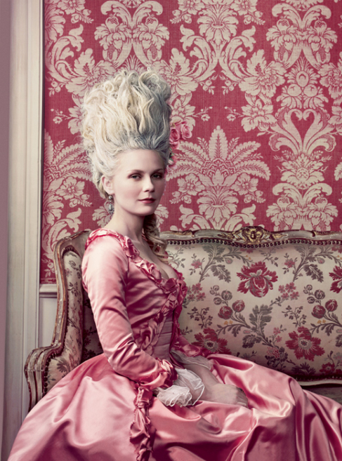
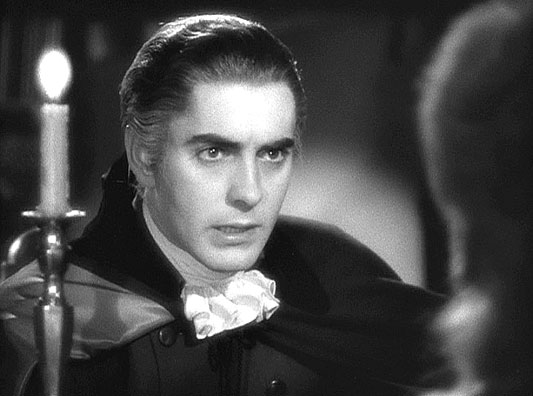
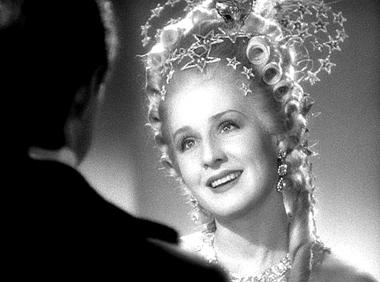
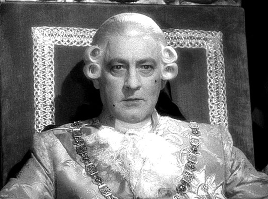
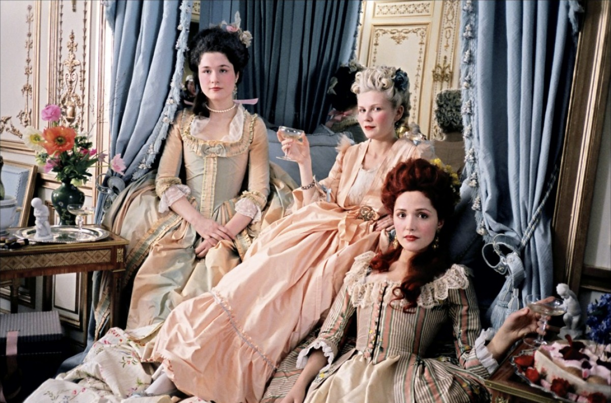
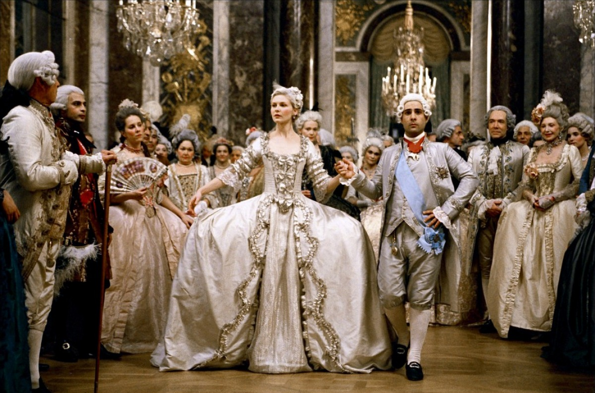
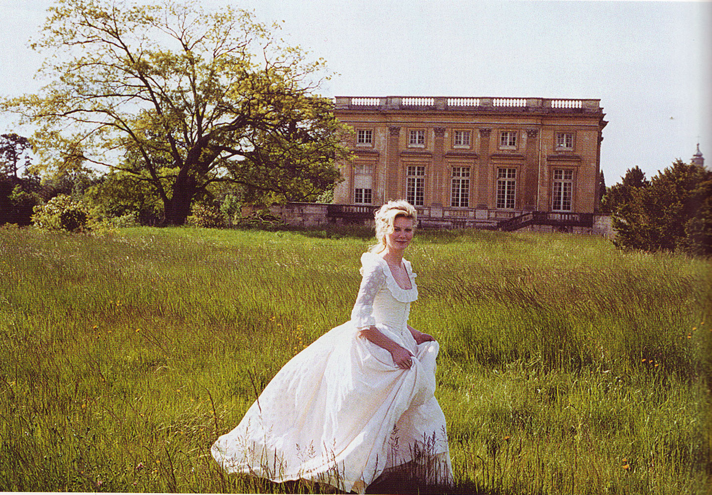

The Dark and the Light
By Lucia Adams
Norma Shearer as Marie Antoinette.

Kirsten Dunst as Marie Antoinette.
Archduchess Maria Antonia Josepha Johanna of Austro-Hungary, 14 years old, arrives at Versailles to marry the Dauphin of France and for seven years before their union is consummated she parties, gambles, snubs the king’s mistress Countess du Barry and has an affair with Swedish Count Axel von Fersen. When she becomes Queen of France she has children with Louis XVI but still lives a frivolous life, of champagne, cards, balls and petit fours. Then comes the French Revolution.
Count Axel von Fersen . . .

As portrayed by Tyrone Power.
The plot is similar in the 1938 and 2006 biopics, both Marie Antoinettes inevitably guilty of “presentism” or attitudes indicative of their times. Woody Van Dyke, director of the jolly Thin Man series, based his ponderous effort on the biography by Stefan Zweig. Young Marie, played by 36 year old Norma Shearer, is vain, selfish, scatterbrained but, all too soon, is transformed into a good-hearted mature woman with a strong sense of duty, too noble to act on her passion for von Fersen (Tyrone Power, stiff as a board and barely acting), a predictable love story cliche.

Norma Shearer.
MGM’s top star even after Thalberg’s death Shearer strains for effect overpowering every scene with her long white mask of a face, theatrical gestures, more appropriate for the proscenium arch, and high pitched Billy Burke voice. She lives in a decadent (Weimar-like), depraved court bristling with sinister old men like her lover the Duc D’ Orleans, a sexually ambiguous Joseph Schildkraut in Joan Crawford makeup, a snake who betrays her, causing the downfall of the monarchy. The Dauphin who becomes King is bumbling, lisping typecast Robert Morley the opposite of John Barrymore’s cosmopolitan Louis XV, so charismatic, so touching, — such a grand actor!

John Barrymore as Louis XV . . .
Robert Morley as Louis XVI.
The scriptwriters studiously include a textbook or two of historical information for dollar-conscious movie goers, including the DIamond Necklace Affair which drags on and on interrupting the momentum of the film and ultimately creates the sensation of a cinematic Classic Comic book. The final third of the long morality tale depicts the royal family as prisoners of the Revolution, (beheadings and all) in an anti-populist rant, very un-Capra, Shakespearean in its contempt for the rabble.
It is a black and white world, rich and poor alike treacherous and threatening, which Technicolor could perhaps have lightened with spectacle. Unfortunately it was scrapped due to budget overruns. Famous costume designer Adrian went to Paris and blew much of the wad with set designer Cedric Gibbons, returning with antique furniture and sundries, antique fabrics including authentic French lace, even jewels to create lavish costumes and opulent interiors, including an exact replica of Marie’s 108 pound wedding gown and the Hall of Mirrors times two in size, constructed on the Burbank backlot.
Sofia Coppola on the other hand had complete access to the Real Versailles, her Marie Antoinette shining brightly in a pastel Laduree macaroon of a film. Drawing on Antonia Fraser’s 2001 book, Marie is compassionate, altruistic, lonely, devastated by a cold husband and heartless court taking refuge in her beautiful children and many friends —. just like Princess Diana, no mistaking the parallels here.

Mary Nighy, left, and Rosa Byrne with Kirsten Dunst.
A baby faced Kirsten Dunst, seemingly unchanged across the decades, loves fashion, (Milena Canonero’s costumes are intoxicating) giggling girlfriends, cakes and candies, little dogs, ribbons, shoes and more shoes, champagne and her boyfriend Axel in a pretty playground as bitchy as a high school gym after the prom. Except for impotent adviser the Duc de Mercy, a delightfully frustrated Steve Coogan, there are no evil courtiers, no Susannah among the Elders, here.

Kirsten Dunst and Jason Schwartzman.
Jason Schwartzman’s Louis, quiet, laid back, California-style, randy Louis XV, Rip Torn almost comparable to Barrymore’s dying monarch, Countess du Barry a far too-scary Asia Argento, (so unlike Gladys George’s third grade schoolteacher,) adorable Duchess de Polignanc, Rose Byrne’s Really Cute Valley Girl, bubbly gay (kiss kiss) hairdressers, and Jamie Dornan’s Fersen, a handsome, sexy, macho hunk live a party life that really is A Lot of Fun. Little or no stuffy history here, folks, Coppola directing “in my style, to make it my own film, something I wanted to see.… and not to fall into the habits of generic period movies” .
The real protagonist is Versailles itself, as ethereally beautiful as a Watteau, a far distant shot of the ascending staircase to the chateau with the beautifully robed residents, the silhouettes of carriages and horses on a long horizontal esplanade, the jewel-like Opera theater, the Grand and Petit Trianons, the vast geometric Le Notre gardens, with fountains, canals, flower beds and groves and of course the Hameau an Austrian farm retreat where Marie et. cie. laze in the sunshine as she plays shepherdess.

Coppola deliberately, even mockingly, contrasting her Marie Antoinette to its somber predecessor, artfully uses a pop score of Bow Wow Wow’s “I Want Candy”, Fools Rush In, other ditties by New Order, the Strokes and the Cure, “I wanted atmospheric, dreamy contemporary music, that kind of teenage girl spirit.” Happy to be spared the ugly details of the Revolution I didn’t miss Rameau and Couperin or Herbert Stothard’s somber score–at all.